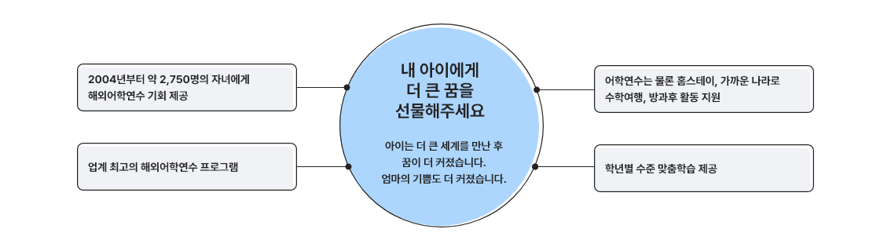

우수GFP자녀를 선발해 해외어학연수를 보내 드립니다.
교보생명 GFP라면 누구나 자녀어학연수에 도전할 수 있습니다. 교보생명 GFP 자녀교육지원프로그램은 자격기준에 해당하는 GFP에게 적용됩니다.
교보생명 우수GFP자녀 해외어학연수(미국, 캐나다, 호주, 뉴질랜드 등)

내 아이에게 더 큰 꿈을 선물해 주세요
아이는 더 넓은 세계를 만난 후 꿈이 더 커졌습니다. 엄마의 기쁨도 더 커졌습니다.
- 2004년부터 약 2,750명의 자녀에게 해외어학연수 기회 제공
- 업계 최고의 해외어학연수 프로그램
- 어학연수는 물론 홈스테이, 가까운 나라로 수학여행, 방과후 활동 지원
- 학년별 수준 맞춤학습 제공
준법감시인확인필 3-2106-2 조직순증지원팀(2021.06.17)